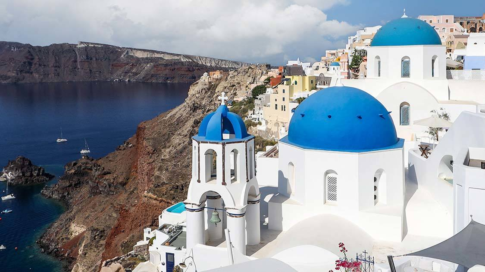
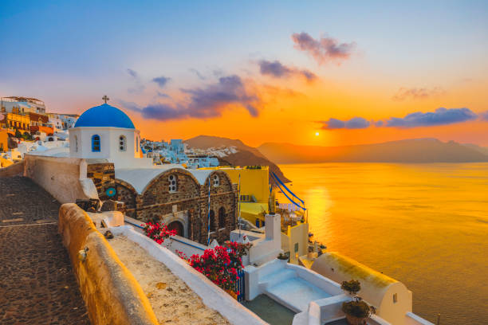
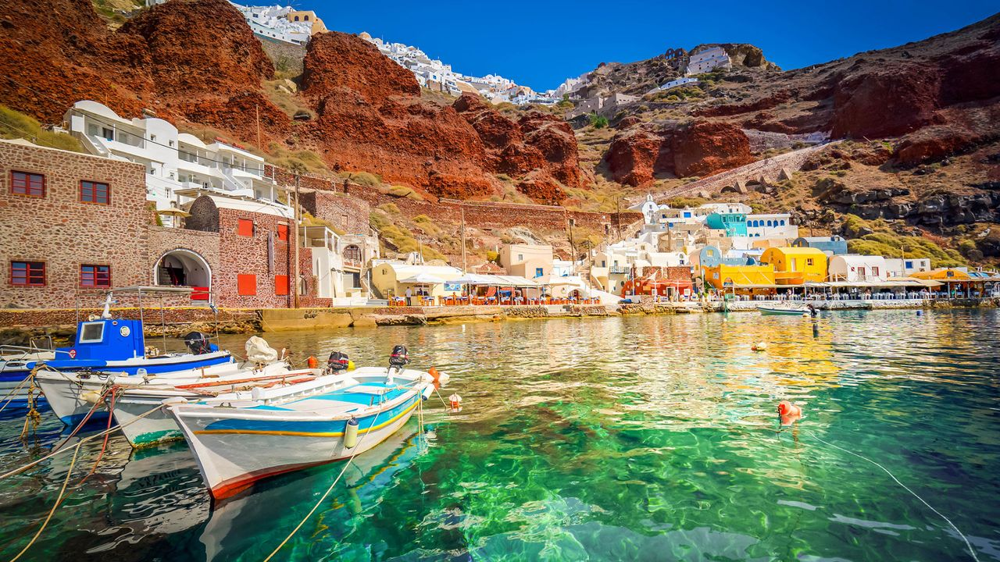
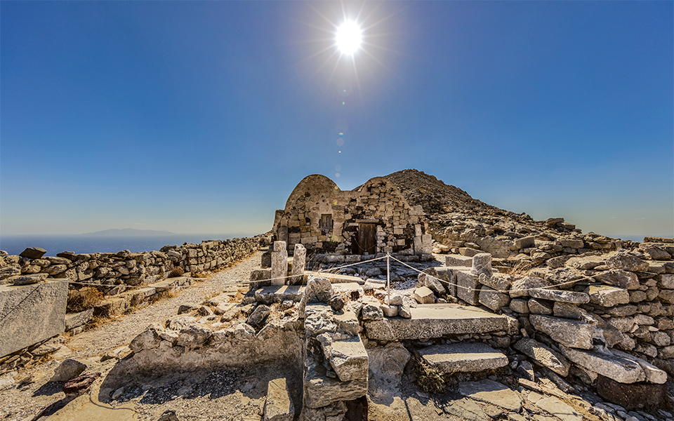

Santorini is my favourite tourist spot because it is a breathtakingly beautiful island located in the Aegean Sea. It is famous for its stunning sunsets, white-washed buildings with blue domes, and crystal-clear waters. The island's unique volcanic landscape, charming villages, and vibrant culture make it a perfect destination for relaxation and exploration. Santorini offers a blend of natural beauty, rich history, and vibrant culture that creates an unforgettable experience for visitors. Whether it's enjoying the local cuisine, exploring ancient ruins, or simply soaking in the breathtaking views, Santorini has something to offer everyone.

Santorini is known for its beautiful white-colored buildings and blue-domed roofs. These houses create a stunning view against the blue sea and sky, making the island one of the most photographed places in the world.

The sunsets in Santorini are considered among the most beautiful in the world. Every evening, visitors gather to watch the sky turn shades of orange, pink, and purple as the sun sets over the sea.

Santorini is located in the Aegean Sea, which is famous for its crystal-clear blue water. The sea adds to the island's beauty and offers opportunities for swimming, sailing, and boat tours.

People from all over the world visit Santorini for vacations and special occasions. Its romantic atmosphere, scenic views, and peaceful environment make it a favorite destination for many.

Santorini has a long and fascinating history dating back thousands of years. Visitors can explore ancient ruins, traditional villages, and museums that showcase the island's rich Greek heritage and culture.